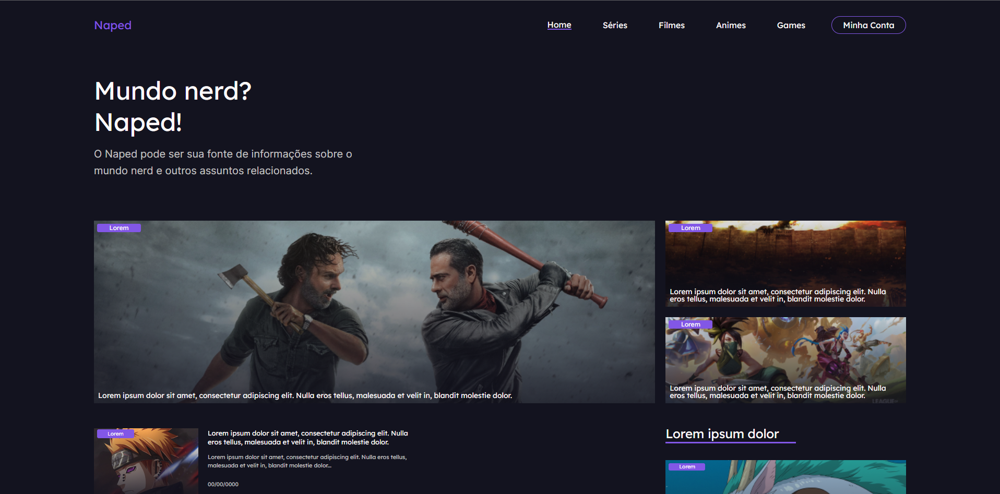

Projetos finalizados
Todos os projetos a seguir foram desafios propostos pelo prof. Iuri Silva da comunidade Codelandia e desenvolvidos por Paulo Barone.
-

Desafio 10 - Naped
Todos os projetos a seguir foram desafios propostos pelo prof. Iuri Silva da comunidade Codelandia e desenvolvidos por Paulo Barone.